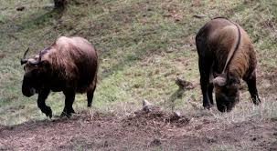
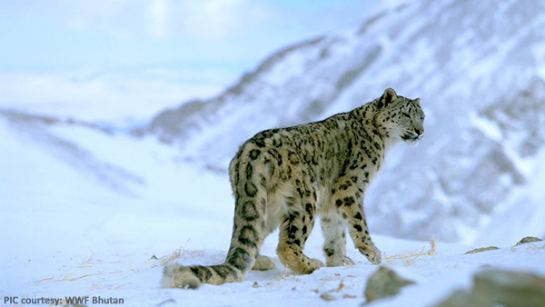
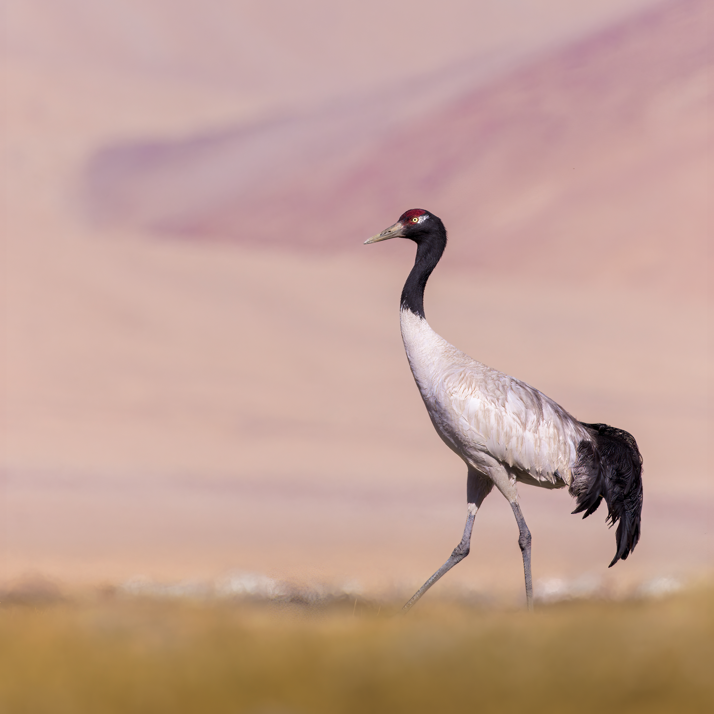
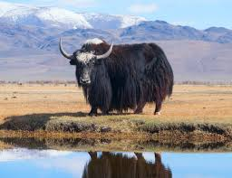
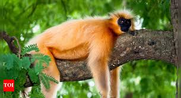
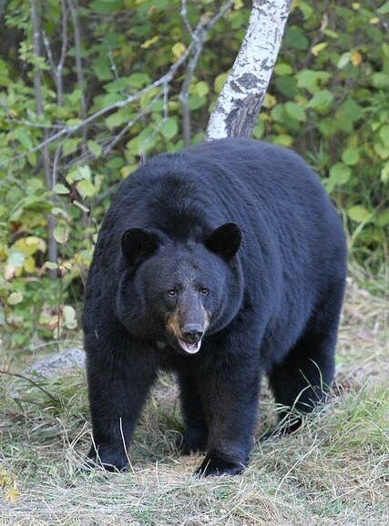
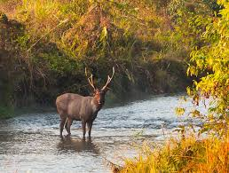
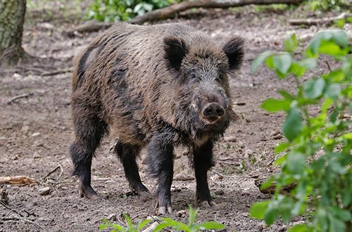
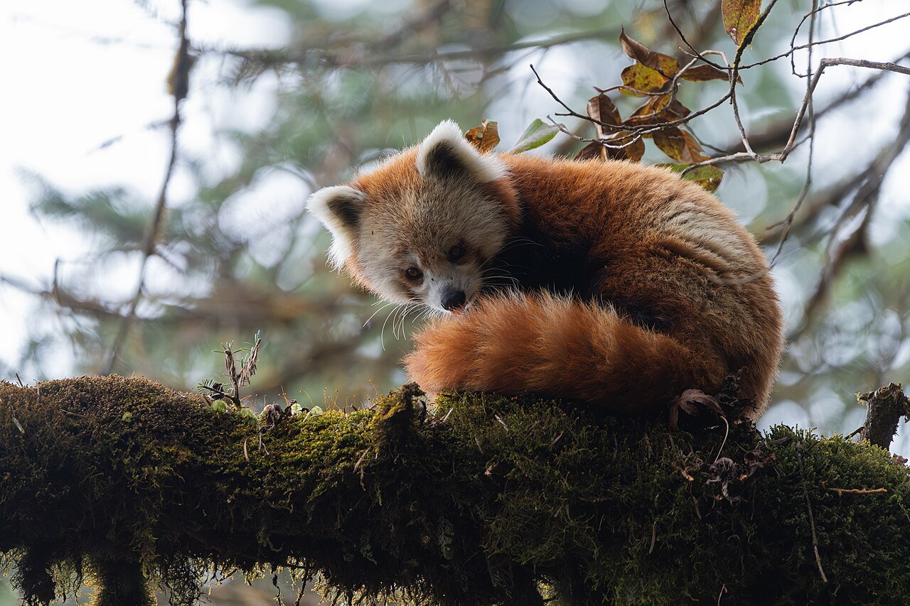

Wildlife Animals of Bhutan
The Animals page was created to help visitors learn about Bhutan’s rich wildlife and rare Himalayan animal species.
Bhutan is home to many unique animals because of its forests, mountains, rivers, and protected national parks.
The country protects wildlife through strict environmental laws and conservation programs that help preserve biodiversity.
This page provides information about famous Bhutanese animals such as takins, snow leopards, red pandas, golden langurs, black-necked cranes, and Bengal tigers.
Visitors can learn about where these animals live, their importance in Bhutanese culture, and the challenges they face in the wild.
Many animals found in Bhutan are rare and endangered. Protected forests and national parks help provide safe habitats for these species to survive.
This page was created to encourage wildlife conservation and help people appreciate Bhutan’s amazing natural heritage.

Takin
Bhutan’s national animal found in mountain forests.
The takin is the national animal of Bhutan and has a unique appearance that resembles both a goat and a cow. It lives in high mountain forests and grasslands.
Takins move in herds and feed on grass, bamboo, and leaves. According to Bhutanese legend, the animal was created by the famous saint Drukpa Kunley.

Snow Leopard
Rare Himalayan predator living in snowy mountains.
The snow leopard is one of the rarest animals found in Bhutan’s Himalayas. It has thick gray fur with dark spots that help it blend into rocky mountains.
Snow leopards are powerful hunters and feed on blue sheep and mountain goats. They are often called the “ghost of the mountains.”

Black-Necked Crane
Sacred migratory bird visiting Bhutan every winter.
The black-necked crane is considered a sacred bird in Bhutanese culture. Every winter these birds migrate from Tibet to valleys in Bhutan.
These elegant birds symbolize peace and good fortune. Festivals are held in Bhutan to celebrate their arrival.

Yak
Strong mountain animal living in cold Himalayan regions.
Yaks are important animals for people living in high mountain areas of Bhutan. They have thick fur that protects them from cold weather.
Farmers use yaks for milk, butter, wool, and transportation. They are an important part of Bhutanese mountain culture.

Golden Langur
Beautiful monkey species with golden-colored fur.
Golden langurs are mainly found in the forests of central and southern Bhutan. They spend most of their time living in trees.
They eat leaves, fruits, and flowers and are protected through forest conservation programs in Bhutan.

Himalayan Black Bear
Large black bear commonly found in Bhutanese forests.
The Himalayan black bear has black fur with a white crescent-shaped mark on its chest. It is a strong climber and often searches for food in trees.
These bears eat fruits, roots, insects, and small animals. They sometimes enter villages searching for food.

Sambar Deer
One of the largest deer species living in Bhutan.
Sambar deer are found in forests near rivers and grasslands. Male sambars have large antlers and strong bodies.
They feed on grass, leaves, and plants and are important prey for predators like tigers and leopards.

Wild Boar
Strong forest animal with sharp tusks.
Wild boars are commonly found in Bhutanese forests and agricultural areas. They have powerful bodies and excellent digging abilities.
They eat roots, fruits, insects, and crops. Farmers sometimes consider them pests because they damage fields.

Musk Deer
Shy mountain deer known for producing musk scent.
The musk deer lives in mountain forests and does not have antlers. Male musk deer have long canine teeth that look like tusks.
These animals were once heavily hunted for musk, but Bhutan now protects them through wildlife conservation laws.

Red Panda
Small tree-dwelling animal with reddish fur.
Red pandas are found in cool Himalayan forests of Bhutan. They have bushy tails and spend most of their time climbing trees.
They mainly eat bamboo, fruits, and insects. Habitat loss and climate change threaten their survival.